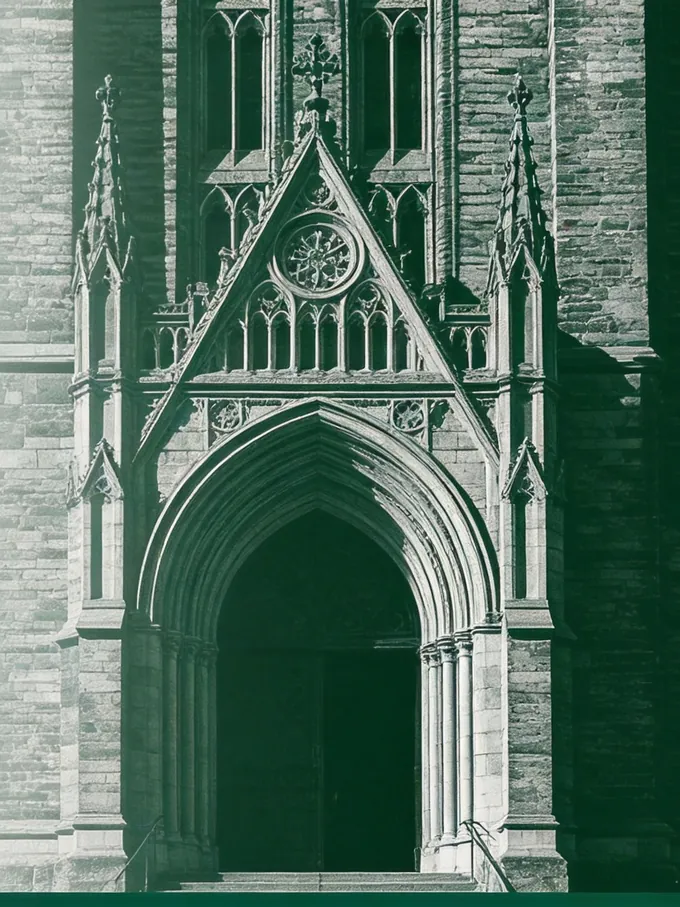

点击查看自述
KEVIN · 创始人
宾大英语教学硕士 · 波士顿大学新闻学学士
他做过记者，也做过老师。在波士顿街头，他把真实的故事从细节里刨出来、确认它、再讲给别人听；后来在宾大和国际学校教了多年英语。这两件事，在他手里合成了一件事：把"挖故事、讲清楚"的本事，从新闻报道用到每一个孩子身上。
他不靠信息差，也不信名校至上。在他看来，申请季最该被看见的，不是被修饰过的履历，而是一个孩子本来的兴趣、经历和擅长。他做的，就是把这些挖出来，讲明白。录取很重要，但家庭关系、孩子的自信，和面对压力时怎么找到方向——这些，他同样在意。
- 波士顿报社记者
- 受过新闻学训练
- 宾大英语教学硕士
- 国际学校英语教学
- 在意家庭关系与心理

创始人 · KEVIN
宾夕法尼亚大学英语教学硕士 · 波士顿大学新闻学学士
我一直在做同一件事：帮一个人找到、并讲好他自己真实的故事。
本科我读新闻，给波士顿当地报社跑过报道。新闻教我的，是怎么把一个故事从表面底下挖出来——确认它是真的，再讲到别人能懂、能被触动。后来我去宾大读英语教学，又在国际学校教过 10 到 12 年级。这些经历到了留学这行，其实是一件事：把"挖故事、讲清楚"的本事，从一篇报道，用到一个孩子身上。
我不靠信息差，也不信名校至上。在我看来，留学这件事，真实的才是最好的，合适的才是最好的。一个孩子最该被申请季看见的，不是被修饰过的样子，而是他自己——他的兴趣、他的经历、他真正擅长什么。我做的，就是把这些挖出来，然后讲明白。
我也不只盯着那一纸录取。家庭关系，孩子的自信和心态，面对压力时怎么找到自己的方向——这些和申请同样重要，甚至更重要。信息差正在被 AI 一点点抹平，而我想做的，是在这个时代，陪一个真实的孩子、一个真实的家庭，走对自己的那条路。
- 教育理念
- 真实 ＞ 修饰 · 合适 ＞ 排名 · 成长 ＞ 录取
- 履历
- 波士顿报社记者 · 宾大英语教学硕士 · 国际学校 10–12 年级教学